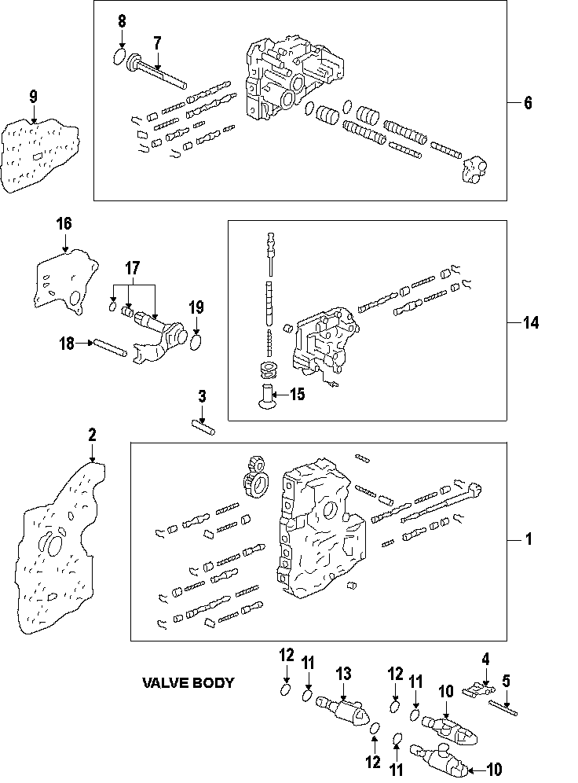
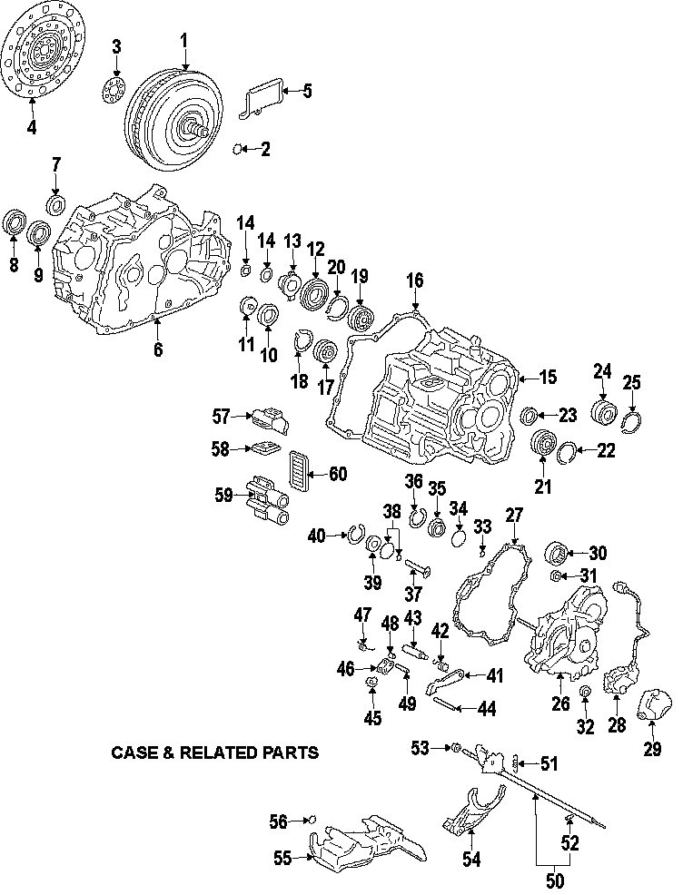
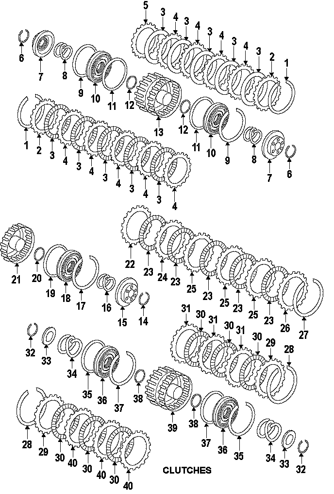
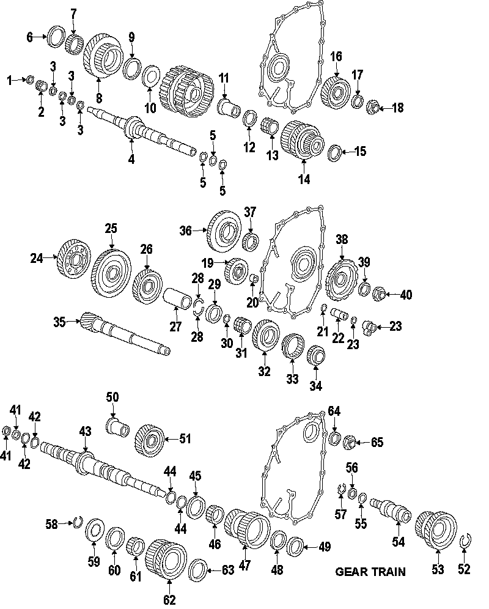
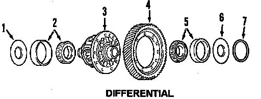

Operation CHARM
: Car repair manuals for everyone.
Home
>>
Honda
>>
2007
>>
Civic Si L4-2.0L
>>
Parts and Labor
>>
Transmission and Drivetrain
>>
Automatic Transmission/Transaxle
>>
Images
Images
Valve Body Components:

Case & Related Parts:

Clutches:

Gear Train:

Differential:
